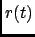
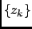
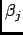

Next: Density of states within
Up: Theory and implementation
Previous: Theory and implementation
Contents
The autocorrelation function  introduced in the previous Section is here
the normalized VACF
hence
.
Here is the x-, y-, or z-component of the velocity of a `tagged' atom.
The memory function  of is defined by the relation
of is defined by the relation
Eq. (4.72) is called the memory function equation.
Within the AR-model the z-transform of the VACF has the form
Here the  are the zeros of
We recall that the z-transform of an arbitrary discrete function  is given by
, and the inverse transform by
. Applying the inverse z-transform to (4.73) yields
is given by
, and the inverse transform by
. Applying the inverse z-transform to (4.73) yields
where the coefficients  are given by
Note that
 has a multiexponential form, and that the stability criterion
has a multiexponential form, and that the stability criterion
must be fulfilled. This is guaranteed by the Burg-algorithm [60,61].
Next: Density of states within
Up: Theory and implementation
Previous: Theory and implementation
Contents
pellegrini eric
2009-10-06